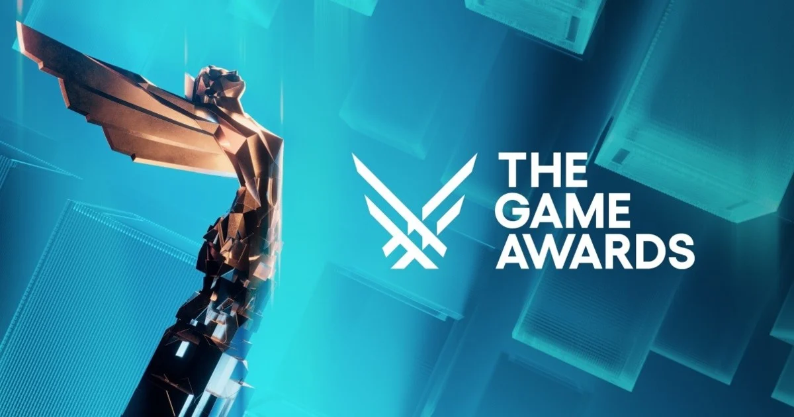

The Game Awards 2025
Gran sorpresa en la gala de los Game Awards

Imagen representativa de la noticia 2
The Game Awards 2025 se celebraron el 11 de diciembre en el Peacock
Theater de Los Ángeles, consolidándose una vez más como el evento más importante
del año para la industria de los videojuegos. Presentado por Geoff Keighley,
el espectáculo combinó premios, tráilers y anuncios exclusivos que definieron tendencias para 2026 y más allá.
La gran protagonista de la noche fue Clair Obscur: Expedition 33,
un RPG AA desarrollado por Sandfall Interactive que arrasó con nueve premios,
incluyendo el codiciado Game of the Year (Juego del Año). Con este resultado,
el título no solo se llevó el máximo galardón, sino que también estableció
un nuevo récord de premios en una sola gala, superando a obras como The Last of Us Part II.
Además de GOTY, Clair Obscur triunfó en categorías clave como
Mejor Dirección, Mejor Narrativa, Mejor Dirección de Arte
y Mejor Interpretación, destacando tanto su diseño creativo
como su impacto emocional en la audiencia.
Más triunfos y títulos destacados
Aunque Clair Obscur dominó, la gala celebró una gran variedad de juegos y géneros:
- Hades II fue reconocido como uno de los mejores juegos de acción del año.
- Hollow Knight: Silksong triunfó como mejor juego de acción/aventura.
- Donkey Kong Bananza se alzó con el premio a mejor juego familiar.
- Umamusume: Pretty Derby se llevó el galardón a mejor juego móvil.
- Field of View fue reconocido por su diseño de audio.
- El RPG de mundo abierto Wuthering Waves obtuvo el prestigioso premio votado por los jugadores: Players’ Voice.
Anuncios y tráilers que marcarán 2026
Los Game Awards no solo premian, sino que también sirven como escaparate de novedades.
Este año, la audiencia pudo ver anuncios muy esperados:
- Nueva entrega de Star Wars: Fate of the Old Republic.
- Dos nuevos títulos de Tomb Raider, incluyendo un remake del original y una nueva aventura.
- Un nuevo juego en la saga Divinity por parte de Larian Studios.
- Coven of the Chicken Foot, un juego de fantasía y plataformas.
Lo que quedó en el tintero
No todos los juegos esperados estuvieron presentes: por ejemplo, CD Projekt RED confirmó que The Witcher 4 no tendría un tráiler o presencia especial durante la gala, a pesar de la expectación que generaba su nominación como título más anticipado.